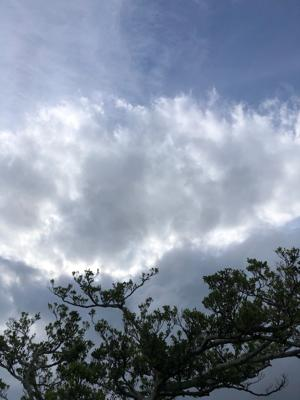
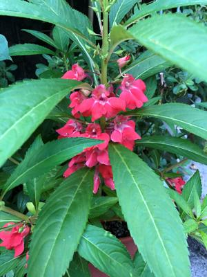

うるがいの話 ある日
最新: 握力【うるがいの話 ある日】とは 一日だけのプログです
『うるがいの話』の最新一日だけのプログで、通信料が少なく経済的だ。カニの画像をクリックすると全ての日付が載る『うるがいの話』サイトを表示します
|
|
【うるがいの話】 うるがい(ｳﾙｶﾞｲ urugai)とは、『もずくがに』の名前でとても大きくなります。 |
|---|---|
|
|
【カミマヤーの話】 猫のことを方言でマヤーといいます。カミマヤー（kamimayaa）とは、神の猫のことです。 |
|
【たながぁの音楽】 たながぁ（ﾀﾅｶﾞｰ tanagaa）とは手長えびのことで、何種類かあり大きいのは車 エビぐらいになります。 |

|
【ぶながぁの話】 ぶながぁ(ﾌﾞﾅｶﾞｰ bunagaa)とは、赤い髪の毛、赤い身体、そして身長は１ｍ２０ｃｍ ぐらい、川の蟹を食べているの目撃された。場所は沖縄県国頭郡大宜味村のと ある村僕の隣近所に住んでいる爺さんから、聞いた話です。 |
|
|
【ギーマの話】 ギーマ(giima)とは、山原の里山に咲くスズランに似た、 花を付けます。実は食べられます、 気が付くと口の周りが紫になっています。 |
2022年10月09日 (日）握力
17:33

ギターの弦をうまく握れるよう握力を鍛える。ウソ、退職してから何故か握力
が無くなってきている気がした。果たして、握力はどの程度なのか握力計を買
って測った。この前、左手の爪が割れたので久しぶりに測定してみた、
握力記録（単位:㎏)
2022.10.03 右R47.5 左45.6 平均:46.7
2021.02.03 右R46.8 左43.6 平均:45.2
2021.01.07 右R41.5 左38.6 平均:40.0
ふふふ、上がっている。秋晴れで爽やかな天気、朝早く県立図書館へいく。帰
りに空き地で、空手着をつけた老若男性が、お握りをほうばっていた。那覇祭
りに出るのだろう、ご苦労様です。早めのジョギングを終え、テレビをみると
綱が・・・、まだ前回の切れるのが参加者にとっては満足できたはず。ま、来
年があるさ。

１７時２９分 ビットコインの総資産 ￥８、１６５↓